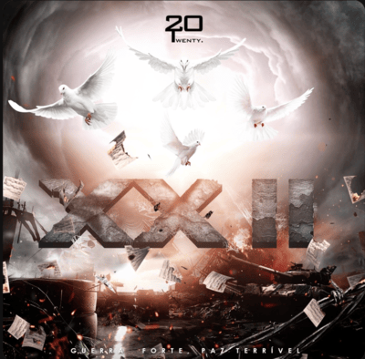

Inicialmente com o nome de
"Twenty20", é um o grupo musical e não só, visto que alguns membros fazem outros tipos de artes na área cinematográfica, fotográfia, e tem os seus próprios beatmakers. O grupo foi criado por dois Jovens: Hélio Cruz (HellyOay) e Murilo (YunLilo) por volta do ano de 2017, embora alguns dos seus membros residem em diferentes partes do mundo, alguns no continente Europeu, Americano e em África (Angola). O grupo teve origem por meio de membros angolanos, mas eles não se tornaram-se populares tão cedo após a criação, mas com o tempo e com muito trabalho demonstrado pelos membros, eles viriam a tornar-se conhecidos, na área da música principalmente.
Atualmente o grupo conta com mais de
71 mil seguidores, mais de
19 milouvintes mensais, distribuindo-se em diferentes partes do mundo como
Angola (Luanda)contam com mais de
14 mil ouvintes, em
Portugal (Lisboa) contam com mais de
1,500 mil ouvintes, no
(Porto,PT) contam com mais de
500 ouvintes, e muito mais... Isso na plataforma de música Spotify.
Daí surge a pergunta por que o nome
"Twenty20"? Que numa tradução lógica signfica
"2020" se o grupo foi criado no ano de
2017? Porque desde muito cedo os membros já tinham uma visão diferente do que eles queriam trazer para o mercado artístico, então por serem inovadores decidiram dar o nome de
TWENTY20
mostrando que são diferentes dos demais.
E isso comprovou-se com um dos primeiros lançamentos do grupo na plataforma Soundcloud a música com o título
"2020"
com uma vibe musical diferente das demais lançadas no mercado, sendo a música não tinha nada em comum do que já se cantava na New School, fazendo juz ao que eles tinham em mete ao criar o nome do grupo.
E com o passar do tempo o grupo foi se consolidando no mercado músical, sendo considerando por alguns fãs os melhores na área do flex, visto que acabaram por influenciar muitos artistas e fãs a usarem e até mesmo a cantar sobre marcas que eles tornaram populares, mais uma vez mostrando o quão eles são diferenciados.

O grupo hoje conta com grandes projetos já distribuídos em diversas plataformas, mas o projeto que realmente os viria elevar e tornar o grupo mais conhecido, particularmente em Angola foi o ep
XX, apesar de que grupo já havia lançado projetos antes desse ep, mas que viriam a tornar-se mais ouvidos após o lançamento do EP
"XX"
lançado no ano de
2019 considerando por muitos um dos melhores projetos do grupo, algo que comprovou isso foi que mais tarde no ano de
2021 o grupo lançou a parte dois do Ep intitulado
"XX II"
que claro, também foi bem recebido pelos seus fãs.